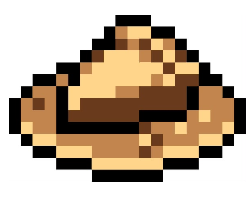

DESCRIÇÃO
Undertale (2015) - Torta de Caramelo e Canela (Butterscotch-Cinnamon Pie)
-> é um dos itens de cura mais icônicos e importantes de Undertale. Ela é assada com
carinho por Toriel nas Ruínas para receber o jogador em sua casa.
Aparição: a torta aparece logo no início do jogo, quando o protagonista acorda no quarto da casa
de Toriel. Ela deixa uma fatia no chão ao lado da cama enquanto o personagem dorme.
INGREDIENTES
Para a massa (base):
- 1 pacote (200g) de biscoito maisena ou Maria
- 4 colheres (sopa) de manteiga derretida
- 1 colher (café) de canela em pó
Para o recheio de caramelo e canela:
- 1 xícara (chá) de açúcar mascavo
- 4 colheres (sopa) de manteiga sem sal
- 1/4 xícara (chá) de amido de milho (maizena)
- 2 xícaras (chá) de leite integral
- 3 gemas de ovo (passadas pela peneira)
- 1 colher (sopa) de canela em pó
- 1 colher (chá) de essência de baunilha
- 1 pitada de sal
MODO DE PREPARO
- Fazer a massa: Triture os biscoitos no liquidificador ou processador até virarem uma farofa fina. Misture com a canela e a manteiga derretida até formar uma massa úmida. Forre o fundo e as laterais de uma forma de torta (com fundo removível, cerca de 22cm) pressionando bem com os dedos. Leve ao forno preaquecido a 180°C por 8 a 10 minutos para firmar. Reserve e deixe esfriar.
- Derreter o açúcar: Em uma panela de fundo grosso, coloque a manteiga e o açúcar mascavo. Leve ao fogo médio, mexendo sempre, até que a manteiga derreta e se misture ao açúcar, formando um caramelo espesso e borbulhante (cerca de 3 a 5 minutos).
- Preparar a base líquida: Enquanto o açúcar derrete, dissolva o amido de milho no leite frio e misture as gemas peneiradas, a canela e o sal.
- Cozinhar o creme: Despeje essa mistura líquida lentamente na panela do caramelo, mexendo vigorosamente com um batedor de arame (fouet). O açúcar vai endurecer um pouco no começo, mas continue mexendo em fogo baixo até ele dissolver completamente e o creme engrossar (textura de um mingau firme). Desligue o fogo e misture a baunilha.
- Montar e gelar: Despeje o creme morno sobre a base de biscoito assada. Alise a superfície com uma espátula e cubra com plástico-filme encostado diretamente no creme (para não criar película). Leve à geladeira por pelo menos 4 horas antes de desenformar e servir.